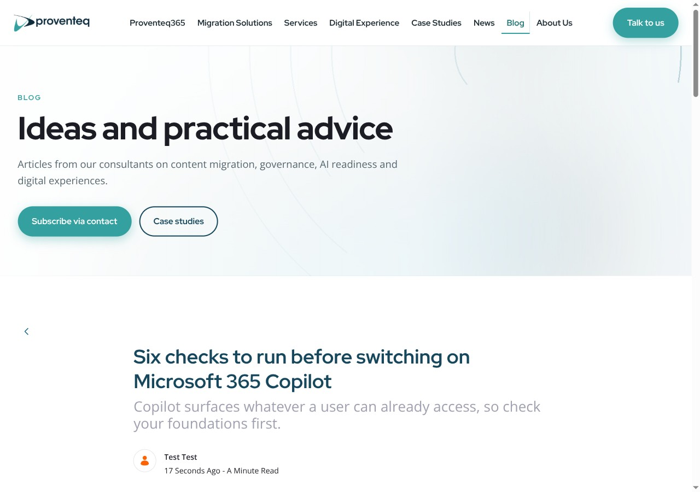

Liferay DevCon 2026
Making Liferay
blazing fast

Miroslav Ligas
Solution Architect · Proventeq
Two halves
1
Tune the portal.
Measure it.

Check the app tier's CPU first
11k
users · Asset Publisher
93%
CPU at the inflection
Liferay DXP Performance Benchmark Study · one 8-core node, DXP 2024.Q2
The ladder
Same test on every rung: 200 first-visit page views a second
p95
server CPU
5
Precompute
S6 · static HTML on nginx
3 ms
0.1 cores
4
Edge HTML
S3 + S4 · no-store off, Varnish caches guest HTML
8 ms
0.8 cores
3
Edge static
S3 + Varnish · assets cached, HTML still from Liferay
19 ms
1.9 cores
2
JVM caches
S2 · 16 fragments marked Cacheable
37 ms
8.2 cores
1
Origin render
S0 · stock, nothing changed
344 ms
13 cores
Measured · k6 CPU excluded · one 20-core box, no network · add your CDN's RTT to rungs 3–5 · rung 5's page is 5 requests, not 56
S1 Hygiene
Remove the noise first
index.on.startup=false # default
session.tracker.memory.enabled=false
JSP development=false
GZipFilter=false # default, compress at the edge
-XX:+UseG1GC # JDK 21 default, with 2+ CPUs
no portal-developer.properties
Measured under load: guest browse p95 49 → 35 ms · Set-Cookie and no-store still on 100 % of guest pages
S2 JVM caches
Cache the fragments, not the pages
2025.Q2
Ehcache 2 → 3
Rewrite your XML
Cluster Link
Invalidates
Never replicate
Cacheable
Audit first
Or leak user data
Measured at 400 pages/s: p95 90 → 13 ms, Liferay 12.4 → 2.1 cores · stock at 600/s: 69 % of busy threads re-parsing fragments
S3 Front-end delivery
Assets aren't slow, but they eat the CPU
cdn.host rewrites
- Theme JS / CSS
- Module bundles
- Portal images
It doesn't touch
- Documents & Media
- Adaptive Media
Permission removed: Liferay 404, edge still 200
Measured: static files 84 % of Liferay's CPU on a first visit · cdn.host rewrote 0 of 2 Adaptive Media URLs
A stock guest page is uncacheable. Twice.
$ curl -sSD- -o /dev/null https://your-liferay/
cache-control: private, no-cache, no-store
set-cookie: JSESSIONID=…
set-cookie: COOKIE_SUPPORT=true
set-cookie: GUEST_LANGUAGE_ID=en_US
S3 Front-end delivery
Make the page cacheable
Stock
cache-control: private, no-cache, no-store
pragma: no-cache
set-cookie: JSESSIONID=…
set-cookie: COOKIE_SUPPORT=true
set-cookie: GUEST_LANGUAGE_ID=en_US
browser.cache.disabled=false
no cache-control
no pragma
set-cookie: JSESSIONID=…
set-cookie: COOKIE_SUPPORT=true
set-cookie: GUEST_LANGUAGE_ID=en_US
Measured: TTFB flat · guest HTML private, no-store 100 % → 0 % · signed-in pages keep no-store · Set-Cookie still sent
S4 Edge HTML · in Varnish
Two rules, bypass first
1
Auth cookie?
Pass to origin.
2
Everything else:
strip cookies, cache.
Get rule 1 wrong and it's a data breach.
S4 result: guest traffic at the edge
−96%
guest page p95, 49 → 2 ms
99.9%
edge hit, cacheable requests
0%
sign-ins served from cache
Measured · S0 → S4, mix at ≈ 120 req/s · Liferay CPU 10.1 → 1.9 cores at S3 → S4 · LAB-RESULTS.md
Measured · same load at every stage
The edge is the step that counts
■ served by Varnish · own scale per panel · DXP 2026.q1.12, mix at ≈ 120 req/s · LAB-RESULTS.md
Measured · pushed until it breaks
How far each stage goes
Rate stepped up until saturation · cookie-less guests · the S4 limit was the load generator, Varnish used 2.8 cores · STRESS-RESULTS.md
S5 Purge on publish
Don't wait for the TTL
Object Action
Objects · webhook, no Java
ModelListener
Web Content · Java, after commit
Measured · CPU per unit of work
One sign-in costs a hundred page renders
Container CPU at a clean step ÷ rate · search ≈ 90 % Elasticsearch, 12× cheaper with highlighting off · RUNG-RESULTS.md
Measured · search highlighting off
One setting, twelve times the search
12×
clean capacity, 25 → 300 searches a second
18×
faster p95 at 20 searches a second, 687 → 38 ms
12×
less CPU at 20 searches a second, 9.5 → 0.8 cores
highlightEnabled=false · same results, our template shows no snippets · sidecar Elasticsearch, small index

A cached page is fast.
Everything else still needs Liferay.
- Locale
- Personalisation
- Forms
- Purge
- Misses
- Sign-in
- Search
- 24/7

Part 2
Don't render it at all.
Draw the line by cardinality
Precompute
- Marketing
- Docs
- Blogs
- Catalogues
Render live
- Intranets
- Dashboards
- Checkout
- Anything per-user
Authored in Liferay, served as files
Webhook on publish
Timer every 15 min
Regenerated from our own Liferay
7
URLs purged for this edit
Same post, two deliveries
Liferay

123 kB 25 scripts
Measured · the HTML of one post, after the edit · only the date line differs

You don't need AI at runtime
0 tokens
to regenerate the site. AI is optional, on an allowance.
Measured · static nginx vs Liferay behind Varnish
Static wins on the page, not the HTML
HTML alone is a tie: ≈ 25,000 req/s each. Whole page views: 1,200/s through Varnish, 10,000/s static.
■ static · 1,000 page views/s · empty browser cache · no network · capacity limited by box and k6, not the servers · STATIC-VS-EDGE.md
What you give up
| Lost | Instead |
|---|
| Portal search | Static index, searched in the browser |
| Comments, forms | Islands → Headless API |
| Sign-in state | Late-hydration island |
| Preview, workflow | Stay in the portal |
| Any theme, any widget | Only what the generator supports |
Four things to take home
1
Mark fragments Cacheable
Audit first, or leak user data
344 → 37 ms
2
Cache at the edge
Keep auth out, purge on change
8 ms, under 1 core
3
Don't render it at all
For content sites, and you give up portal search and forms
3 ms, 0.1 cores
4
Skip AI at runtime
Add it only if you want it, on an allowance
0 tokens
Measured: 200 first-visit page views a second · one 20-core box, no network
www.liferay.com
x-lfr-guest-html-cache: 1
Liferay caches aggressively too.
Thank you
Miroslav Ligas
Solution Architect · Proventeq